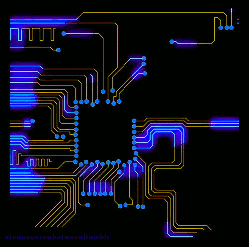
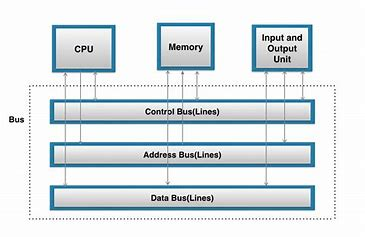

Bus
The CPU bus, often referred to as “the bus”, is a pathway composed of cables and connectors used to carry data between a computer microprocessor and the main memory1. It’s essentially a series of lines that connect the processor to another part of the computer’s architecture, such as cache memory or main memory2. The bus provides a communication path for the data and control signals moving between the major components of the computer system1.
There are three main types of buses in a CPU:
Control Bus: The control bus in a CPU is a pathway used to transmit control signals between the CPU and other devices within the computer. These signals coordinate and regulate the actions of the computer's hardware, ensuring smooth operation.
Address Bus: This is uni-directional, meaning it passes an address one way, from the CPU to RAM. The sole purpose of an address bus is to identify the address of the location in cache or main memory that is to be read from or written to.
Data Bus: This is bi-directional, meaning it can carry data to main memory from the processor and vice versa. The data bus transfers data to/from the address that is held on the address bus.
The amount of data that can be carried by the data bus depends on the word size, which describes the width of the data bus. For instance, new processors usually have a word size of 8 bytes (64 bits), allowing for 64 bits to be transferred during each cycle.
